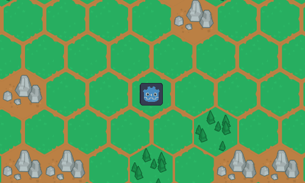

This is an implementation of the A* pathfinding algorithm modified to accomodate hex-based 2D grids in the Godot game engine.
The way that 2D grids count coordinates for hexagonal grids causes some issues because hexagonal grids have 6 neighbors instead of 4, which means that if you connect the points that a normal grid needs you'd have 2 disconnected points left. But at the same time if you enable all 4 diagonals you'll get 2 extra points that break the pattern.
The 2 disconnected points that need to be connected to the center hexagonal cell switch directions every row (or column for vertical offset). For even row numbers the 2 missing points are top-left and bottom-left, but for odd row numbers it's top-right and bottom-right. For vertical offset grids it's swapped around, for even column numbers the missing points are top-left and top-right, but for odd it's bottom-left and bottom-right.
I have basically added a function that connects a point to its neighboring 6 points using the logic above that's called for each (non-solid) point.
The demo was built on the Godot engine which uses the GDScript language that is based on Python, the engine is completely free and open-source.
